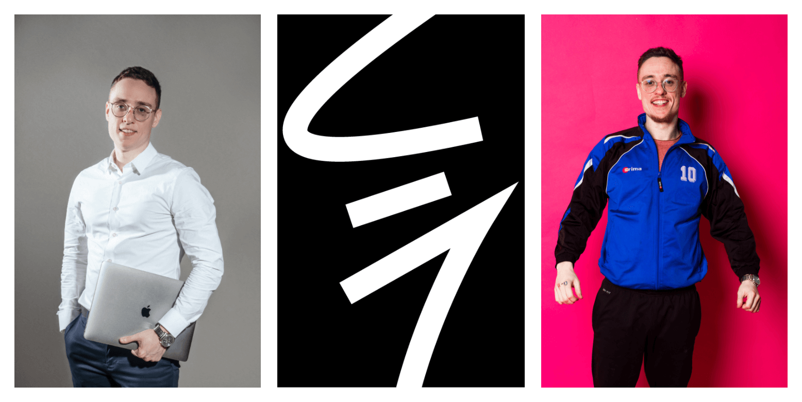

Программист, поэт, артист, продюсер.

Моя основная работа — программирование. Я создаю программные продукты за деньги, и искренне люблю это дело. Вместе со мной трудятся мои друзья, мастера своего дела: дизайнеры, программисты, системные аналитики, исследователи, инженеры и прочие. Прошу, обращайтесь.
В своих социальных сетях я пишу стихи о родине, рассказываю и покакзываю, почему у нас жить так хорошо, что лучше бы уж нигде кроме как у нас и не жить. Буду показывать свой родной город с точки зрения своего взгляда в розовых очках. Я наивен и буду рад поделиться своим наивным но позитивным, добрым и практичным взглядом на вещи, которые окружают каждого жителя моей родной страны.
В качестве дополнительной, но пожалуй ещё более любимой деятельности, я занимаюсь созданием проекта «Союз-1». Проект носит под собой философские основания и практическую реализацию концепции: «каждый должен делать, что хочет, любить и уважать ближнего, и не мешать остальным». Практическая реализация в первую очередь осуществляется через создание более прибыльных и комфортных условиях труда для мастеров своего любимого любого дела. В прочем, я просто рассуждаю на тему того, как жить счастливо. Делюсь своим мнением с теми, кому интересно, и живу своей счастливой жизнью.
Добавляйтесь, пишите. Буду рад.